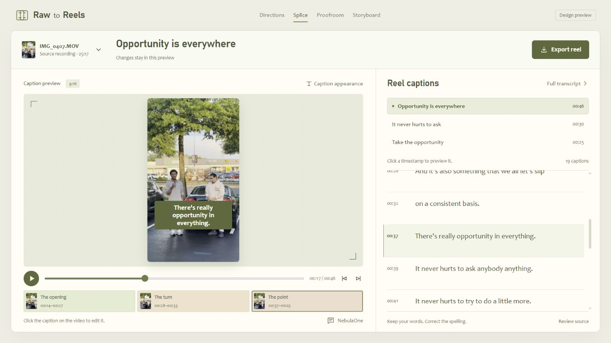
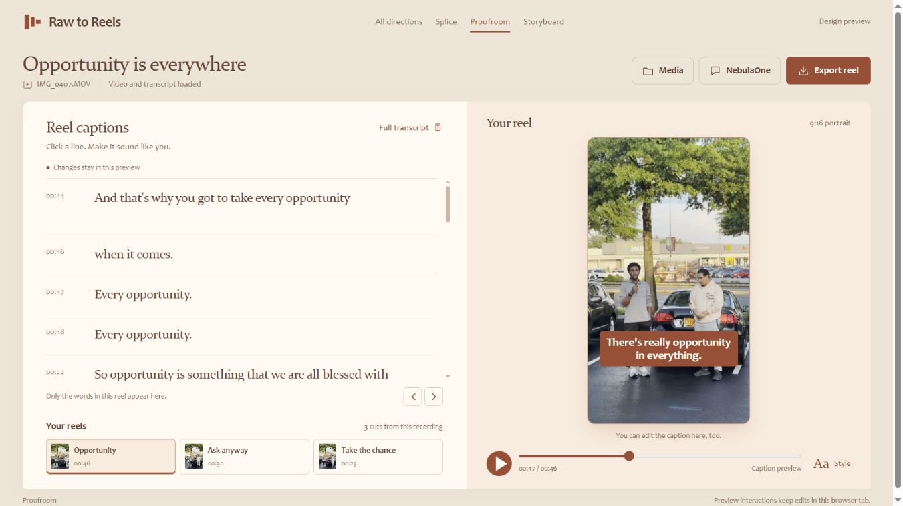
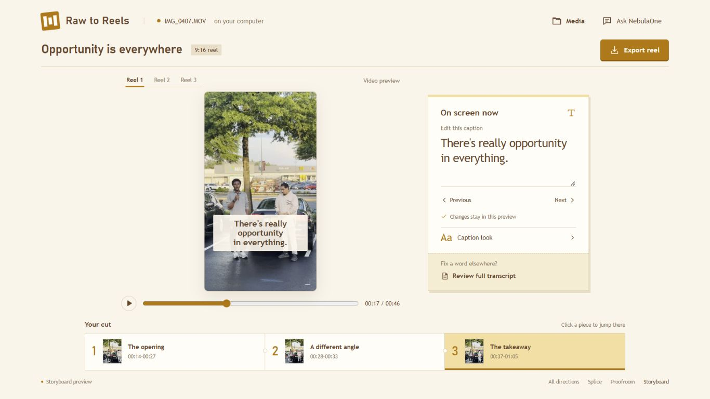

Local, interactive previews
Choose your editing desk.
Three directions built around your footage and your words. Open one, edit a caption, and try the full transcript view.

RecommendedSplice
An olive editing desk. Words and video stay together, with a compact cut sequence beneath the preview.

Proofroom rejected
A rust and paper proofreading spread. Larger, readable transcript lines make correcting your wording the main activity.

Storyboard rejected
A warm yellow cutting bench. Edit one caption at a time and move through a tactile sequence of clips.
Why Splice leads: you can correct a line and see its result without changing modes. It makes room for a long transcript while keeping the video central.
Try the same actions in each: correct a caption, choose another reel, open the full transcript, and find the export. NebulaOne opens only when you ask for it.
The previews use local still frames and simulated playback. Text edits stay in the current tab. Export, file loading, and the live app are outside this design review.